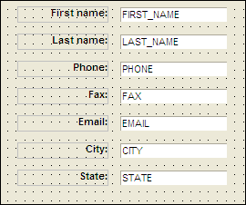
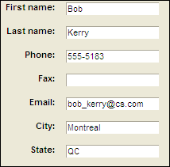

Design Mode and View Mode
Each type of layout has its own design editor that you access in Design Mode. In Design Mode, you create and arrange the layout contents. You switch from Design Mode to View Mode to view and work with the layouts you create.

A Form in Design Mode (Form Editor)

The Same Form in View Mode
Design Mode lets you construct layouts to display database information, and View Mode lets you access database information using the layouts you create in Design Mode.
Switching between Design Mode and View Mode
To switch to Design Mode :
While in a layout, click the Design Mode
 button on
the toolbar.
button on
the toolbar.While in the Control Panel, click the layout you want to open and click the
Design button.
To switch from Design Mode to View Mode :
While in the Form Designer, click the Form View
 button.
button.While in the Browse Designer, click the Browse View
 button.
button.